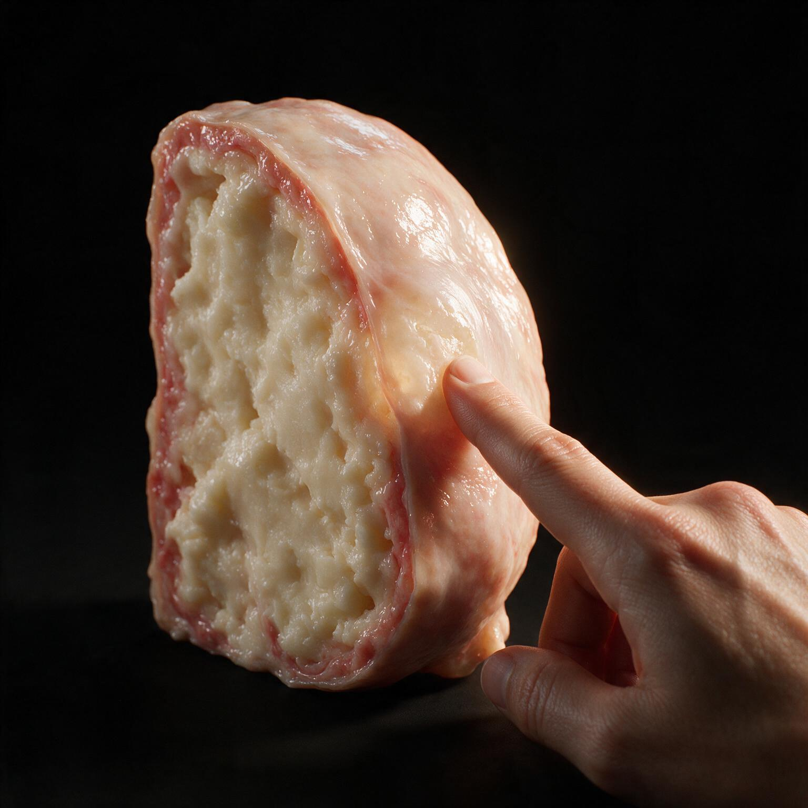
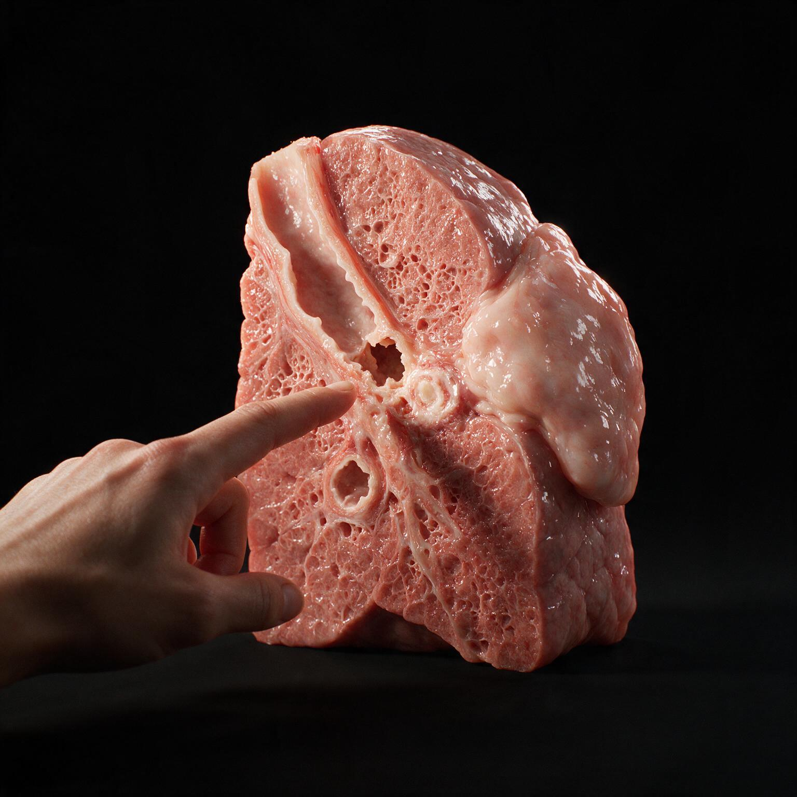
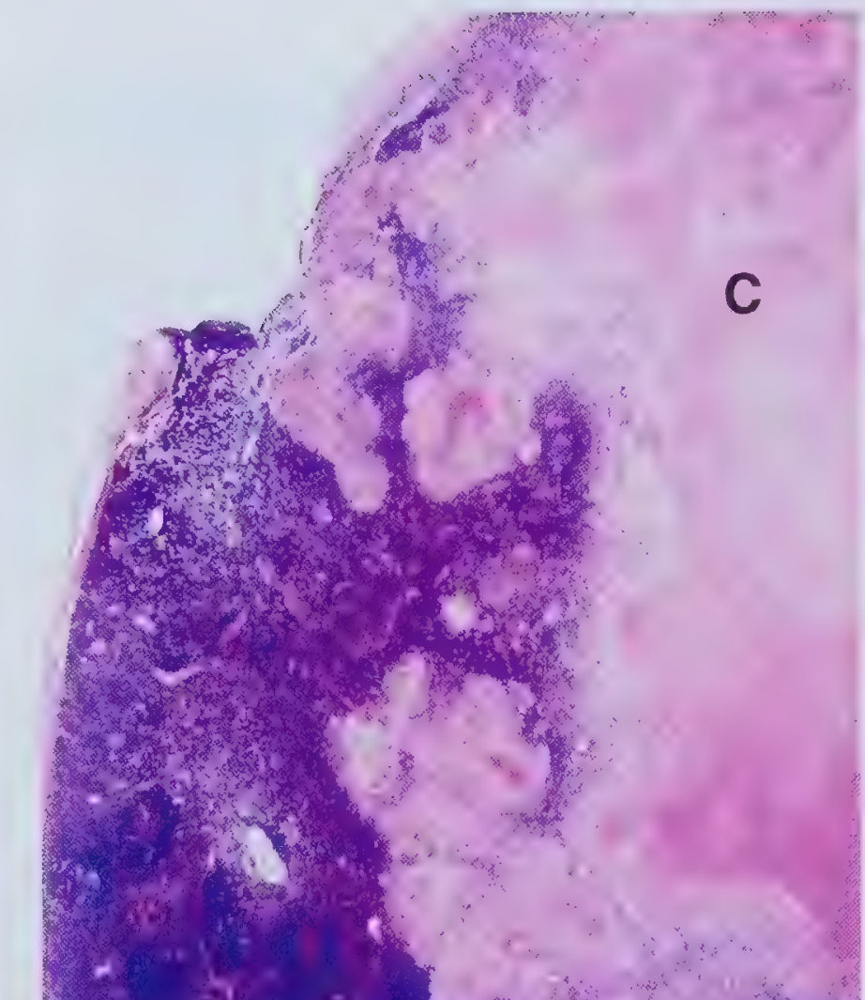
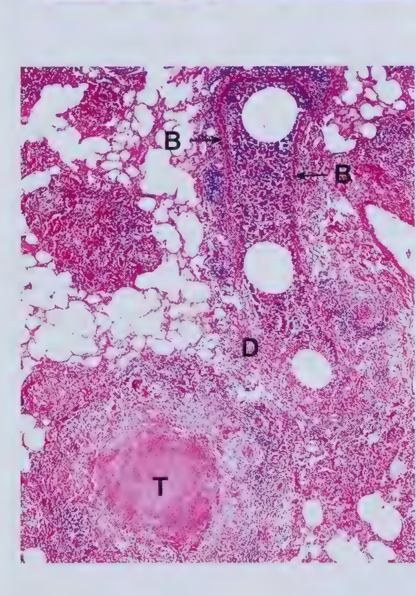

A hilar lymph node overwhelmed by caseous necrosis ruptures through its capsule and erodes into a nearby bronchus wall. Bacilli spill through the breach into the lung parenchyma, seeding a new caseating tubercle right at the site — the mechanism behind tuberculous bronchopneumonia.
Fig. 4.5 Fig. 4.6
